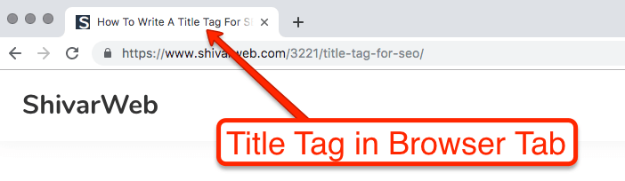
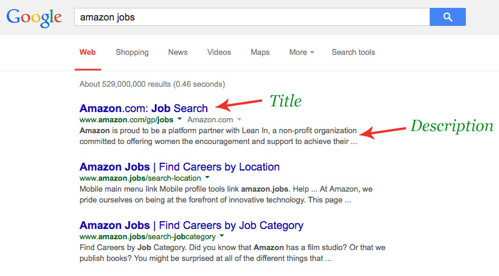

SEO Tags [Search Engine Optimization]
- We use SEO tags in <head> of HTML file.
- It helps Search Engine like (Google , Yahoo) how to treat our website.
- Here we will learn about 5 SEO tags :
- title-tag
- description-tag
- keyword
- canonical
- robots
NOTE : See the code in the <head> tag of this HTML file.
<title> tag
- <title> tag provides the tab name just like shown below :

- It also provides the title that appears in the search bar as shown below :
description [using meta - tag]
- description is the passage snippet user sees in the search engine below the title
- It provides an insight to what is inside the website.

- Syntax : <meta name="description" content="This site contains information about various SEO tags ih HTML."/>
keyword [using meta - tag]
- keyword is used to specify the key tags your website is based on, helps search engine to rank your website. (is kinda automated now)
- Syntax : <meta name="keywords" content="SEO , Search Engine Optimization , HTML/">
canonical [using link - tag]
- When we have duplicates of same website under different name, we mention them under canonical such that the search engine ranks any one of them
- Without specifying such things will lead to both website not being ranked in search engine.
- Syntax : <link rel="canonical" href="SEO_2.html"/>
robots [using meta - tag]
- We ue robots to decide wheather to read our page and put it in search engine or not.
- In (content attribute) we have two options :
- index / noindex = sets wheather to read and place our website in search list.
- follow / nofollow = sets wheather to include the links provided in search list or not
- Syntax : <meta name="robots" content="index, nofollow"/>